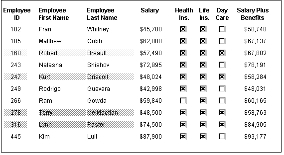
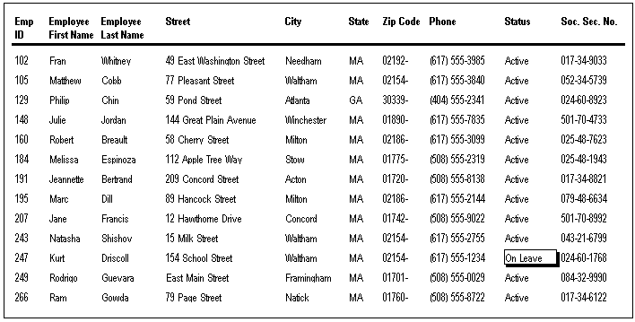
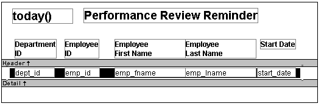
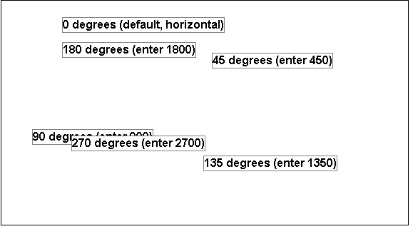
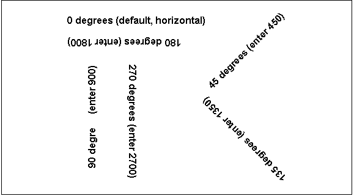
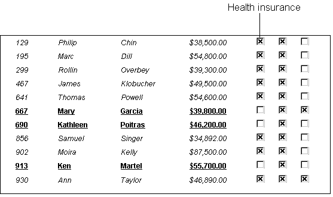
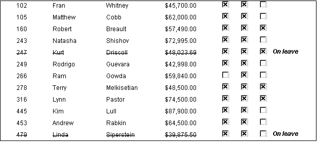
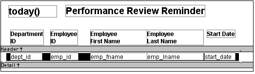
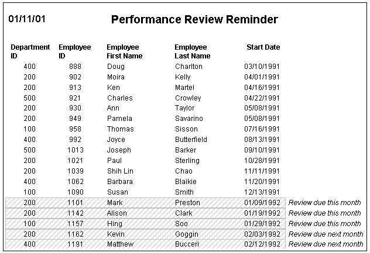

Each property has its own set of property values that you can use to specify the true and false conditions in the If expression. Usually you specify a number to indicate what you want. For example, if you are working with the Border property, you use the number 0, 1, 2, 3, 4, 5, or 6 to specify a border.
Table 24-1 summarizes the properties available. A detailed description of each property follows the table. For a complete list of properties for each control, see the online Help.
 Valid values of properties are shown in parentheses
in the Properties view wherever possible. For example, the drop-down list showing border selections
includes the correct number for specifying each border in parentheses
after the name of the border (ShadowBox (1), Underline (4)).
Valid values of properties are shown in parentheses
in the Properties view wherever possible. For example, the drop-down list showing border selections
includes the correct number for specifying each border in parentheses
after the name of the border (ShadowBox (1), Underline (4)).
| Property | Painter option in Properties view | Description |
|---|---|---|
| Background.Color | Background Color on General page or Font page | Background color of a control |
| Border | Border on General page | Border of a control |
| Brush.Color | Brush Color on General page | Color of a graphic control |
| Brush.Hatch | Brush Hatch on General page | Pattern used to fill a graphic control |
| Color | Text Color on Font page; Color on General page; Line Color on General page | Color of text for text controls, columns, and computed fields; background color for the DataWindow object; line color for graphs |
| Font.Escapement (for rotating controls) | Escapement on Font page | Rotation of a control |
| Font.Height | Size on Font page | Height of text |
| Font.Italic | Italic on Font page | Use of italic font for text |
| Font.Strikethrough | Strikeout on Font page | Use of strikethrough for text |
| Font.Underline | Underline on Font page | Use of underlining for text |
| Font.Weight | Bold on Font page | Weight (for example, bold) of text font |
| Format | Format on Format page | Display format for columns and computed fields |
| Height | Height on Position page | Height of a control |
| Pen.Color | Pen Color on General page | Color of a line or the line surrounding a graphic control |
| Pen.Style | Pen Style on General page | Style of a line or the line surrounding a graphic control |
| Pen.Width | Pen Width on General page | Width of a line or the line surrounding a graphic control |
| Pointer | Pointer on Pointer page | Image to be used for the pointer |
| Protect | Protect on General page | Whether a column can be edited |
| Timer_Interval | Timer Interval on General page | How often time fields are to be updated |
| Visible | Visible on General page | Whether a control is visible |
| Width | Width on Position page | Width of a control |
| X | X on Position page | X position of a control |
| X1, X2 | X1, X2 on Position page | X coordinates of either end of a line |
| Y | Y on Position page | Y position of a control relative to the band in which it is located |
| Y1, Y2 | Y1, Y2 on Position page | Y coordinates of either end of a line |
Setting for the background color of a control.
Background Color on the General page or Font page in the Properties view.
A number that specifies the control's background color.
For information on specifying colors, see "Specifying colors".
The background color of a line is the color that displays between the segments of the line when the pen style is not solid.
If Background.Mode is transparent (1), Background.Color is ignored.
The following statement specifies that if the person represented by the current row uses the day care benefit, the background color of the control is set to light gray (15790320). If not, the background color is set to white (16777215):
If(bene_day_care = 'Y', 15790320, 16777215)
In this example, the condition is applied to the Background.Color property for three controls: the emp_id column, the emp_fname column, and the emp_lname column.
The following is a portion of the resulting DataWindow object. Notice that the employee ID, first name, and last name have a gray background if the employee uses the day care benefit:

The type of border for the control.
Border on the General page in the Properties view.
A number that specifies the type of border. Values are:
The following statement specifies that if the person represented by the current row has a status of L (on leave), the status column displays with a Shadow box border:
If(status = 'L', 1, 0)
In this example, the condition is applied to the Border property of the status column.
The following is a portion of the resulting DataWindow object. Notice that the status On Leave displays with a Shadow box border:

 About the value L and the value On Leave The status column uses an edit style. The internal value for
on leave is L and the display value is On Leave. The conditional
expression references the internal value L, which is the actual
value stored in the database. The DataWindow object shows the value On
Leave, which is the display value assigned to the value L in the
code table for the Status edit style.
About the value L and the value On Leave The status column uses an edit style. The internal value for
on leave is L and the display value is On Leave. The conditional
expression references the internal value L, which is the actual
value stored in the database. The DataWindow object shows the value On
Leave, which is the display value assigned to the value L in the
code table for the Status edit style.
Setting for the fill color of a graphic control.
Brush Color on the General page in the Properties view.
A number that specifies the color that fills the control.
For information on specifying colors, see "Specifying colors".
See the example for "Brush.Hatch".
Setting for the fill pattern of a graphic control.
Brush Hatch on the General page in the Properties view.
A number that specifies the pattern that fills the control. Values are:
In this example, statements check the employee's start date to see if the month is the current month or the month following the current month. Properties of a rectangle control placed behind the row of data are changed to highlight employees with months of hire that match the current month or the month following the current month.
The Design view includes columns of data and a rectangle behind the data. The rectangle has been changed to black in the following picture to make it stand out:

The following statement is for the Brush.Color property of the rectangle. If the month of the start date matches the current month or the next one, Brush.Color is set to light gray (12632256). If not, it is set to white (16777215), which means it will not show:
If(month( start_date ) = month(today())
or month( start_date ) = month(today())+1
or (month(today()) = 12 and month(start_date)=1),
12632256, 16777215)
The following statement is for the Brush.Hatch property of the rectangle. If the month of the start date matches the current month or the next one, Brush.Hatch is set to Bdiagonal (1). If not, it is set to Transparent (7), which means it will not show:
If(month( start_date ) = month(today())
or month( start_date ) = month(today())+1
or (month(today()) = 12 and month(start_date)=1),
1, 7)
Expressions are also provided for Pen.Color and Pen.Style.
For more about these properties and a picture, see "Pen.Style".
The color of text for text controls, columns, and computed fields; background color for the DataWindow object; line color for graphs.
In the Properties view, Text Color on the Font property page; Color on the General property page; Line Color on the General property page.
A number that specifies the color used for text.
For information on specifying colors, see "Specifying colors".
The following statement is for the Color property of the emp_id, emp_fname, emp_lname, and emp_birth_date columns:
If(month(birth_date) = month (today()), 255, 0)
If the employee has a birthday in the current month, the information for the employee displays in red (255). Otherwise, the information displays in black (0).
The Font.Underline property has the same conditional expression defined for it so that the example shows clearly on paper when printed in black and white.
The angle of rotation from the baseline of the text.
Escapement on the Font page in the Properties view.
An integer in tenths of degrees. For example, 450 means 45 degrees. 0 is horizontal.
To enter rotation for a control, select the control in the Design view and click the button next to the Escapement property in the Properties view. In the dialog box that displays, enter the number of tenths of degrees.
The following picture shows the Design view with a number of text controls. Each text control shows the Font.Escapement value entered and the number of degrees of rotation. In the Design view, you do not see rotation; it looks as if the controls are all mixed up. Two controls seem to overlie each other:

The next picture shows the same controls at runtime. Each control is rotated appropriately:

 How to position controls that are rotated Make the controls movable. To do so, display each control
and select the Moveable check box in the Position page. Then in
the Preview view, click the rotated text control until a gray box
displays (try the center of the text). Drag the rotated control
where you want it. In the Design view, the controls will be wherever
you dragged them. They may look incorrectly positioned in the Design
view, but they will be correctly positioned when you run the DataWindow object.
When you are satisfied with the positioning, you can clear the Moveable
check box for the controls to ensure that they stay where you want
them.
How to position controls that are rotated Make the controls movable. To do so, display each control
and select the Moveable check box in the Position page. Then in
the Preview view, click the rotated text control until a gray box
displays (try the center of the text). Drag the rotated control
where you want it. In the Design view, the controls will be wherever
you dragged them. They may look incorrectly positioned in the Design
view, but they will be correctly positioned when you run the DataWindow object.
When you are satisfied with the positioning, you can clear the Moveable
check box for the controls to ensure that they stay where you want
them.
The height of the text.
Size on the Font page in the Properties view.
An integer in the unit of measure specified for the DataWindow object. Units of measure include PowerBuilder units, thousandths of an inch (1000 = 1 inch), thousandths of a centimeter (1000 = 1 centimeter), or pixels. To specify size in points, specify a negative number.
The following statement is specified for the Font.Height property of a text control. Note that the DataWindow object is defined as using thousandths of an inch as its unit of measure. The statement says that if the control is in the first row, show the text 1/2-inch high (500 1/1000ths of an inch) and if it is not the first, show the text 1/5-inch high (200 1/1000ths of an inch):
If(GetRow() = 1, 500, 200)
The boundaries of the control might need to be extended to allow for the increased size of the text. At runtime, the first occurrence of the text control is big (1/2 inch); subsequent ones are small (1/5 inch).
A number that specifies whether the text should be italic.
Italic on the Font page in the Properties view.
The following statements are specified for the Font.Italic, Font.Underline, and Font.Weight properties, respectively. If the employee has health insurance, the employee's information displays in italics. If not, the employee's information displays in bold and underlined:
If(bene_health_ins = 'Y', 1, 0)
If(bene_health_ins = 'N', 1, 0)
If(bene_health_ins = 'N', 700, 400)
Statements are specified in this way for four controls: the emp_id column, the emp_fname column, the emp_lname column, and the emp_salary column. In the resulting DataWindow object, those with health insurance display in italics. Those without health insurance are emphasized with bold and underlining:

A number that specifies whether the text should be crossed out.
Strikeout on the Font page in the Properties view.
The following statement is for the Font.Strikethrough property of the emp_id, emp_fname, emp_lname, and emp_salary columns. The status column must be included in the data source even though it does not appear in the DataWindow object itself. The statement says that if the employee's status is L, which means On Leave, cross out the text in the control:
If(status = 'L', 1, 0)
An extra text control is included to the right of the detail line. It becomes visible only if the status of the row is L (see "Visible").
The following is a portion of the resulting DataWindow object. It shows two employees who are On Leave. The four columns of information show as crossed out:

A number that specifies whether the text should be underlined.
Underline on the Font page in the Properties view.
The following statement, when applied to the Font.Underline property of columns of employee information, causes the information to be underlined if the employee does not have health insurance:
If(bene_health_ins = 'N', 1, 0)
For pictures of this example, see "Font.Italic".
The weight of the text.
Bold on the Font page in the Properties view.
 Most commonly used values The most commonly used values are 400 (Normal) and 700 (Bold).
Your printer driver might not support all of the settings.
Most commonly used values The most commonly used values are 400 (Normal) and 700 (Bold).
Your printer driver might not support all of the settings.
The following statement, when applied to the Font.Weight property of columns of employee information, causes the information to be displayed in bold if the employee does not have health insurance:
If(bene_health_ins = 'N', 700, 400)
For pictures of this example, see "Font.Italic".
The display format for a column.
Format on the Format page in the Properties view.
A string specifying the display format.
The following statement, when applied to the Format property of the Salary column, causes the column to display the word Overpaid for any salary greater than $60,000 and Underpaid for any salary under $60,000:
If(salary>60000, 'Overpaid', 'Underpaid')
 Edit Mask edit style change The Edit Mask edit style assigned to the salary column had
to be changed. Because edit styles take precedence over display
formats, it was necessary to change the edit style assigned to the
salary column (an Edit Mask edit style) to the Edit edit style.
Edit Mask edit style change The Edit Mask edit style assigned to the salary column had
to be changed. Because edit styles take precedence over display
formats, it was necessary to change the edit style assigned to the
salary column (an Edit Mask edit style) to the Edit edit style.
The height of the column or other control.
Height on the Position page in the Properties view.
An integer in the unit of measure specified for the DataWindow object. Units of measure include PowerBuilder units, thousandths of an inch (1000 = 1 inch), thousandths of a centimeter (1000 = 1 centimeter), or pixels.
The following statement causes the height of a rectangle to be 160 PowerBuilder units if the state column for the row has the value NY. Otherwise, the rectangle is 120 PowerBuilder units high:
if (state = 'NY', 160, 120)
For more details and pictures, see "Example 4: changing the size and location of controls".
The color of the line or the outline of a graphic control.
Pen Color on the General page in the Properties view.
A number that specifies the color of the line or outline.
For information on specifying colors, see "Specifying colors".
See the example for the Pen.Style property, next.
The style of the line or the outline of a graphic control.
Pen Style on the General page in the Properties view.
In this example, statements check the employee's start date to see if the month is the current month or the month following the current month. Properties of a rectangle control placed behind the row of data are changed to highlight employees with months of hire that match the current month or the month following the current month.
The Design view includes columns of data and a rectangle behind the data. The rectangle has been changed to black in the following picture to make it stand out:

The following statement is for the Pen.Color property of the line around the edge of the rectangle. If the month of the start date matches the current month or the next one, Pen.Color is set to light gray (12632256). If not, it is set to white (16777215), which means it will not show:
If(month( start_date ) = month(today())
or month( start_date ) = month(today())+1
or (month(today()) = 12 and month(start_date)=1),
12632256, 16777215)
The following statement is for the Pen.Style property of the rectangle. If the month of the start date matches the current month or the next one, Pen.Style is set to Solid (0). If not, it is set to NULL (5), which means it will not show:
If(month( start_date ) = month(today())
or month( start_date ) = month(today())+1
or (month(today()) = 12 and month(start_date)=1),
0, 5)
Expressions are also defined for Brush.Color and Brush.Hatch.
For more about these properties, see "Brush.Hatch".
The following is a portion of the resulting DataWindow object. A rectangle with light gray cross-hatching highlights employees whose reviews are due soon. The line enclosing the rectangle is Light Gray and uses the pen style Solid (0):

The width of the line or the outline of a graphic control.
Pen Width on the General page in the Properties view.
An integer in the unit of measure specified for the DataWindow object. Units of measure include PowerBuilder units, thousandths of an inch (1000 = 1 inch), thousandths of a centimeter (1000 = 1 centimeter), or pixels.
The following statement causes the width of a line to be 10 PowerBuilder units if the state column for the row has the value NY. Otherwise, the line is 4 PowerBuilder units wide:
If(state = 'NY', 10, 4)
For more details and pictures, see "Example 4: changing the size and location of controls".
The image used for the mouse pointer when the pointer is over the specified control.
Pointer on the Pointer page in the Properties view.
A string that specifies a value of the Pointer enumerated data type or the name of a cursor file (CUR) used for the pointer.
Values of the Pointer enumerated data type are:
The following condition, entered for the Pointer property of every control in a row of expense data, changes the pointer to a column every time the value in the expense column exceeds $100,000. Note that the pointer has no meaning in a printed report. The pointer is for use on the screen display of a DataWindow object:
If(expense 100000, 'pbcolumn.cur', 'arrow!')
The protection setting of a column.
Protect on the General page in the Properties view.
The number of milliseconds between the internal timer events.
Timer Interval on the General page in the Properties view.
The default is 0 (which is defined to mean 60,000 milliseconds or one minute).
Whether the control is visible in the DataWindow object.
Visible on the General page in the Properties view.
The following statement is for the Visible property of a text control with the words On Leave located to the right of columns of employee information. The statement says that if the current employee's status is L, which means On Leave, the text control is visible. Otherwise, it is invisible:
If(status = 'L', 1, 0)
 The status column must be retrieved The status column must be included in the data source even
though it does not appear in the DataWindow object itself.
The status column must be retrieved The status column must be included in the data source even
though it does not appear in the DataWindow object itself.
The Design view includes the text control at the right-hand end of the detail line. The text control is visible at runtime only if the value of the status column for the row is L.
In the resulting DataWindow object, the text control is visible only for the two employees on leave. For a picture, see "Font.Strikethrough".
The width of the control.
Width on the Position page in the Properties view.
An integer in the unit of measure specified for the DataWindow object. Units of measure include PowerBuilder units, thousandths of an inch (1000 = 1 inch), thousandths of a centimeter (1000 = 1 centimeter), or pixels.
The following statement causes the width of a rectangle to be 500 PowerBuilder units if the state column for the row has the value NY. Otherwise, the rectangle is 1000 PowerBuilder units wide:
if (state = 'NY', 500, 1000)
For more details and pictures, see "Example 4: changing the size and location of controls".
The distance of the control from the left edge of the DataWindow object. At runtime, the distance from the left edge of the DataWindow object is calculated by adding the margin to the x value.
X on the Position page in the Properties view.
An integer in the unit of measure specified for the DataWindow object. Units of measure include PowerBuilder units, thousandths of an inch (1000 = 1 inch), thousandths of a centimeter (1000 = 1 centimeter), or pixels.
The following statement causes a rectangle to be located 6.250 inches from the left if the state column for the row has the value NY. Otherwise, the rectangle is 4.000 inches from the left:
If(state = 'NY', 6250, 4000)
For more details and pictures, see "Example 4: changing the size and location of controls".
The distance of each end of the line from the left edge of the DataWindow object as measured in the Design view. At runtime, the distance from the left edge of the DataWindow object is calculated by adding the margin to the x1 and x2 values.
X1, X2 on the Position page in the Properties view.
Integers in the unit of measure specified for the DataWindow object. Units of measure include PowerBuilder units, thousandths of an inch (1000 = 1 inch), thousandths of a centimeter (1000 = 1 centimeter), or pixels.
The following statements for the X1 and X2 properties of a line cause the line to extend from 6.250 to 7.150 inches from the left if the state column for the row has the value NY. Otherwise, the line extends from 4.000 to 6.000 inches from the left:
If(state = 'NY', 6250, 4000)
If(state = 'NY', 7150, 6000)
For more details and pictures, see "Example 4: changing the size and location of controls".
The distance of the control from the top of the band in which the control is located.
Y on the Position page in the Properties view.
An integer in the unit of measure specified for the DataWindow object. Units of measure include PowerBuilder units, thousandths of an inch (1000 = 1 inch), thousandths of a centimeter (1000 = 1 centimeter), or pixels.
For information, see "Example 4: changing the size and location of controls".
The distance of each end of the specified line from the top of the band in which the line is located.
Y1, Y2 on the Position page in the Properties view.
Integers in the unit of measure specified for the DataWindow object. Units of measure include PowerBuilder units, thousandths of an inch (1000 = 1 inch), thousandths of a centimeter (1000 = 1 centimeter), or pixels.
The following statements for the Y1 and Y2 properties of a line cause the line to be located .400 inches (Y1 and Y2 equal .400 inches) from the top of the detail band, if the state column for the row has the value NY. Otherwise, the line is located .250 inches (Y1 and Y2 equal .250 inches) from the top of the detail band:
If(state = 'NY', 400, 250)
If(state = 'NY', 400, 250)
For more details and pictures, see "Example 4: changing the size and location of controls".